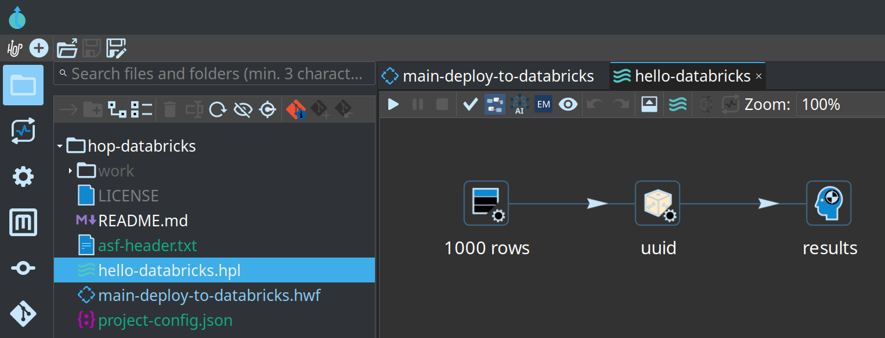
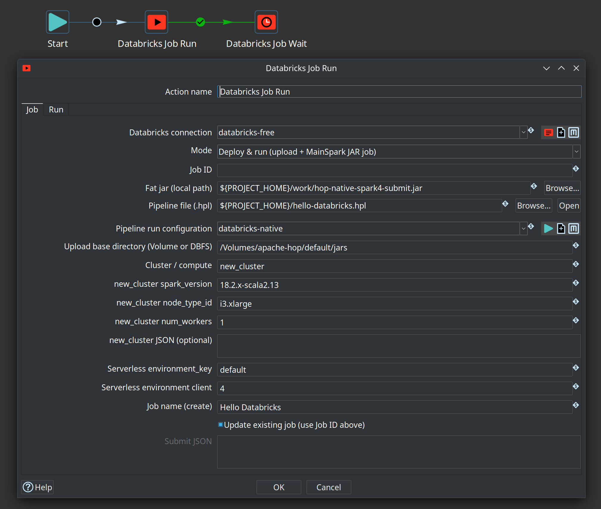
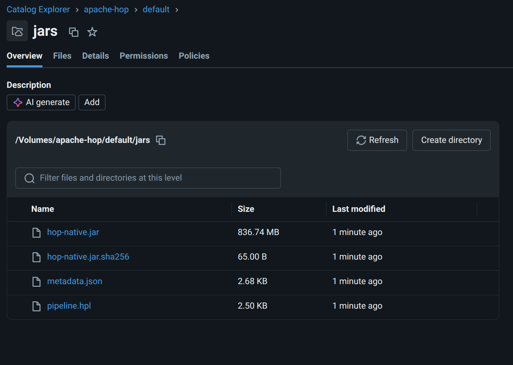
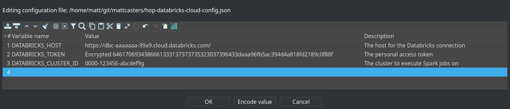
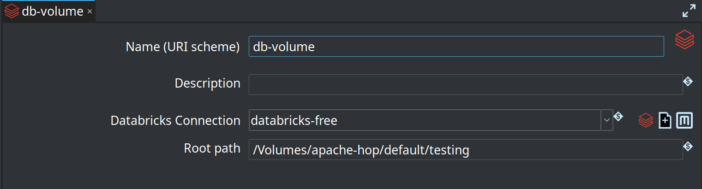
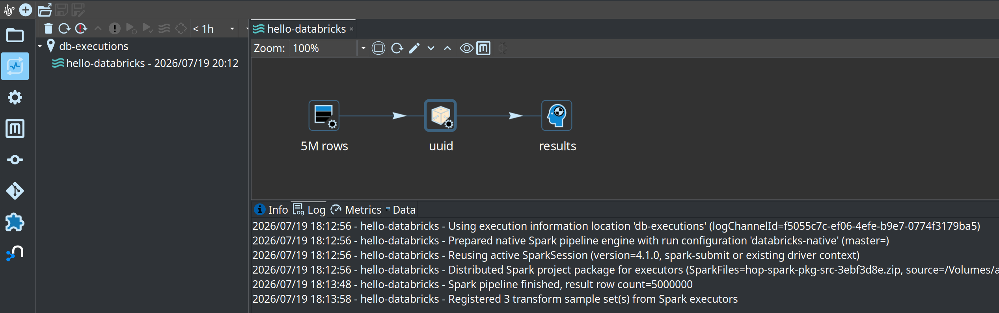
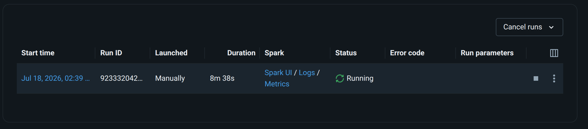

Native Spark on Databricks
- Sample project shape
- What Deploy & run does
- Workspace and tier: classic clusters vs serverless
- Connection and secrets
- Artifact storage: UC Volumes vs DBFS
- Compute modes (Deploy & run)
- FAQ
- Fat jar and pipeline run configuration
- End-to-end checklist
- Related
This page captures practical lessons for running Hop native Spark pipelines on a Databricks workspace via the Databricks job run Deploy & run path (MainSpark JAR task).
It is not a full Databricks admin guide. It focuses on what usually goes wrong when connecting Hop to Free / trial / serverless-oriented workspaces versus a classic-cluster-capable (e.g. Premium) workspace suitable for Spark 4.1 and modern Java.
For general native Spark concepts (engine, fat jar, local[*] first), start with
Getting started with the native Spark engine.
Sample project shape
A minimal Hop project for this path typically includes:
-
A small pipeline to run on the cluster (e.g. generate rows → random UUID → dummy)
-
A workflow with Databricks job run (Deploy & run) and optional Databricks job wait
-
A
work/folder with the native-provided fat jar -
Metadata: Databricks Connection, Native Spark pipeline run configuration
-
Optionally (for remote execution history from the laptop GUI): Databricks VFS Connection, Caching File execution information location on a UC Volume, and an environment config with
DATABRICKS_HOST/DATABRICKS_TOKEN— see Execution information on a UC Volume

hello-databricks.hpl in the project explorer (Generate rows → UUID → Dummy)What Deploy & run does
When mode is Deploy & run, the Job Run action:
-
Uploads artifacts to a workspace path (UC Volume or classic DBFS). Names are chosen so concurrent deploys and library refreshes stay correct:
-
fat jar → content-addressed
hop-native-<sha12>.jar(first 12 hex chars of the local jar’s SHA-256) plus a matching.sha256sidecar — skip upload when that remote path already matches size + sidecar (see Fat jar re-upload every run is slow — can Hop skip it? and [lesson-fat-jar-library-uri]) -
pipeline →
pipeline-{stem}.hpl(simple mode; may be omitted when a package-relative path is used) -
exported Hop metadata →
metadata-{stem}.json(simple mode; embedded in the package when package mode is on) -
optional Spark project package →
hop-spark-package-{stem}.zip(nested Simple Mapping / Pipeline Executor) -
optional environment config →
env-config-{stem}.json(MainSpark--HopConfigFile) -
{stem}= sanitized pipeline file basename without extension (e.g.hello-mapping-databricks)
-
-
Creates or updates a Databricks Jobs definition with a
spark_jar_task:-
main class:
org.apache.hop.spark.run.MainSpark -
parameters: classic positional
pipeline,metadata,runConfig— or named--Hop*args when a project package and/or env file is present
-
-
Calls
jobs/run-nowand optionally waits for completion (or fire-and-forget
Databricks job wait).
Credentials come from Databricks Connection metadata (workspace host + personal access token). That is not the Databricks JDBC SQL warehouse connection.

new_cluster (e.g. DBR 18.2.x-scala2.13, AWS i3.xlarge)Workspace and tier: classic clusters vs serverless
Hop’s Deploy & run path is built for a classic compute story: either an existing
all-purpose cluster or a classic job cluster (new_cluster in the Jobs API).
| Workspace style | Typical compute | Hop Deploy & run JAR jobs |
|---|---|---|
Free / some trial / serverless-only |
No (or very limited) user-created classic clusters; serverless Jobs only |
Not a good fit for full MainSpark JAR deploy today. Serverless has different job shape (environments / |
Premium (or equivalent) with classic clusters enabled |
All-purpose clusters and/or classic job clusters (e.g. AWS |
Supported path. Create or attach a classic cluster that can run your Spark / Java line, then use existing cluster id or |
Lessons learned
-
Free tier / “cannot create a cluster” — many Free or UI-first workspaces never expose a classic cluster id. Deploy & run then has nothing valid to put in
existing_cluster_id. Putting the literal stringnew_clusterinto that field without a nested object produces errors such as Cluster new_cluster does not exist (the API treated it as a cluster id). -
Serverless-only error —
Only serverless compute is supported in the workspacemeans classicnew_cluster/ existing all-purpose clusters are blocked. Serverless needs job-levelenvironmentsand taskenvironment_key, and must not send task-levellibrariesthe same way classic jobs do. -
Spark 4.1 / Java 21 style workloads — for Hop’s native Spark 4.x engine and a fat jar built for modern runtimes, provision a workspace that allows classic clusters (e.g. AWS Premium workspace) and a DBR / job cluster configuration aligned with your Spark and JVM expectations. Do not assume Free/serverless will match local
native-providedfat-jar testing. -
New workspace for classic — if the current workspace is permanently serverless-oriented, creating a new classic-capable workspace (cloud account + tier that allows classic compute) is often simpler than fighting Free-tier product limits.
-
Fat jar library URI must change when jar bytes change (Dedicated / long-lived cluster “caching crapout”) — overwriting a fixed Volume path such as
/Volumes/…/hop-native.jar(even with Files API?overwrite=trueand a fresh.sha256sidecar) is not enough for Databricks to always run the new classes. A long-lived Dedicated (or other all-purpose) cluster often keeps previously installed job libraries on the driver/executor classpath (old URI still wins even after a successful Volume overwrite). Symptoms: Volume object is minutes old and matches localsha256sum, but MainSpark driver log still shows old behavior (e.g. missing>>>>>> Spark project package distribution build: pkg-dist-…right afterInitializing Hop, or obsolete package-distribution log strings such ascluster-shared … (no SparkFiles)). Hop Deploy & run therefore uploads a content-addressed library pathhop-native-<sha12>.jarand points the job’slibraries[].jarat that URI so each content change is a new library identity. Still required after the first switch (or if oldhop-native.jarremains installed on the cluster): restart the target Dedicated cluster so accumulated libraries are cleared, then re-run. Verify the driver log prints the expectedpkg-dist-…fingerprint before debugging package/mapping logic.
Connection and secrets
-
Create a Databricks Connection (Jobs / PAT), not only a JDBC entry.
-
Prefer Hop variables for host and token (project or lifecycle environment JSON).
-
Password-style fields and variable values may be stored as
Encrypted …. The Jobs client resolves variables and then callsEncr.decryptPasswordOptionallyEncryptedso both plain and encrypted PAT values work. -
Test connection in the metadata editor uses the same variable space as Hop GUI (
MetadataManager/HopGuivariables). After changing the plugin, rebuild the client assembly so the runningplugins/tech/databricksjar matches your source (evaluate-in-IDE vs stale plugin jar is a common false lead).
Example environment variables:
DATABRICKS_HOST=https://dbc-….cloud.databricks.com DATABRICKS_TOKEN=Encrypted …
Connection fields:
host = ${DATABRICKS_HOST}
token = ${DATABRICKS_TOKEN}
CLI (with projects/environments registered in Hop config):
cd $HOP_HOME # e.g. assemblies/client/target/hop
export HOP_CONFIG_FOLDER=/path/to/your/hop-config-dir
./hop run -j my-project -e my-databricks-env \
-f main-deploy-to-databricks.hwf -r local -l BASICArtifact storage: UC Volumes vs DBFS
Modern workspaces often have public DBFS root disabled. Uploads to
dbfs:/FileStore/… then fail with:
PERMISSION_DENIED: Public DBFS root is disabled
Prefer Unity Catalog Volumes
-
Create a volume (e.g. catalog
apache-hop, schemadefault, volumejars). -
Set Upload base directory on Job Run Deploy & run to something like:
/Volumes/apache-hop/default/jars
Artifacts land as (names depend on jar content and entry pipeline stem):
/Volumes/apache-hop/default/jars/hop-native-2f80e51734a5.jar /Volumes/apache-hop/default/jars/hop-native-2f80e51734a5.jar.sha256 /Volumes/apache-hop/default/jars/pipeline-hello-databricks.hpl /Volumes/apache-hop/default/jars/metadata-hello-databricks.json /Volumes/apache-hop/default/jars/hop-spark-package-hello-databricks.zip
The .sha256 sidecar next to the content-addressed jar lets later deploys skip re-uploading the same bytes (see Fat jar re-upload every run is slow — can Hop skip it?). The content-addressed filename is what forces Databricks to treat a new jar as a new job library (see [lesson-fat-jar-library-uri]).

Which upload API Hop uses
| Path prefix | API | Notes |
|---|---|---|
|
Files API — |
Required for UC Volumes. Single streaming PUT (up to ~5 GiB). Parent folders/volume must exist and be writable by the PAT. |
Classic |
Legacy DBFS — |
Only where public DBFS root is still enabled. Not interchangeable with Volumes. |
If logs still show POST /api/2.0/dbfs/create for a /Volumes/… path, the running plugin jar is almost certainly older than the Files API fix — rebuild/copy hop-tech-databricks into the client plugins/tech/databricks folder and restart Hop.
Job library and MainSpark parameter paths for volumes stay as absolute /Volumes/… (no dbfs: scheme).
Hop VFS for Volumes
From Hop GUI and local transforms you can use a Databricks VFS Connection (scheme = metadata name, auth via referenced Databricks Connection) to browse, read, and write the same Files API paths (for example dbx-jars:///Volumes/apache-hop/default/jars/…).
That is Hop-side I/O only — it does not replace absolute /Volumes/… paths on the cluster or in Jobs API library URIs.
See Databricks Volumes / Workspace VFS.
Execution information on a UC Volume
You can store Hop execution information (pipeline graph, logs, transform metrics, and row samples from an execution data profile) on a Unity Catalog Volume and open it from the laptop Hop GUI — even though the pipeline ran on Databricks under MainSpark.
That works because:
-
The Caching File location writes one JSON file per top-level execution (plus nested state/samples inside it).
-
The root folder can be a Databricks VFS URI (for example
db-volume:///executions). -
On the cluster, MainSpark resolves named VFS schemes from the exported project metadata and writes through the Files API using the Databricks Connection PAT.
-
On the laptop, the same location metadata + environment variables let the Execution Information Perspective list and open those remote files.
This is for execution metadata only (logs, metrics, sample rows), not for bulk Spark datasets. Prefer Caching File over plain File so writes are batched (fewer Files API round-trips). Native Spark Dataset I/O still uses /Volumes/… or cloud URIs — not the Hop VFS scheme.
Pattern overview
| Piece | Role |
|---|---|
Workspace host + PAT (Jobs API and Files API auth for VFS) |
|
Environment / lifecycle config |
|
Named scheme (e.g. |
|
Execution Information Location (Caching File) |
Root folder = |
Pipeline run configuration (Native Spark) |
Execution information location = the Caching File location; optional execution data profile for sample rows |
Deploy & run package |
Exports connection, VFS, location, run config, and (when configured) the env config so the driver can write the same URI |
1. Databricks Connection (variables for secrets)
Create a Jobs/PAT connection. Prefer variables so the same metadata works on the laptop and on the cluster after Deploy & run ships the environment config.

${DATABRICKS_HOST} / encrypted token variable2. Environment configuration file
Define at least host and token in a Hop environment or lifecycle configuration file that you use when opening the project in GUI and when Deploy & run attaches env config for MainSpark:
DATABRICKS_HOST=https://dbc-….cloud.databricks.com DATABRICKS_TOKEN=Encrypted …
Optional: DATABRICKS_CLUSTER_ID for existing-cluster deploy.

DATABRICKS_HOST, encrypted DATABRICKS_TOKEN, optional cluster id|
If the GUI can browse the Volume but the cluster writes a local path such as
|
3. Databricks VFS Connection (scheme + Volume root)
Create a VFS connection whose name is the URI scheme. Point Root path at a folder on a UC Volume (create that folder in Catalog Explorer if needed).

db-volume, connection databricks-free, root /Volumes/…/testingWith root path /Volumes/apache-hop/default/testing:
-
Hop URI
db-volume:///executionsmaps to workspace path/Volumes/apache-hop/default/testing/executions -
Leave root empty only if you prefer full paths in every URI (
db-volume:///Volumes/…)
4. Caching File execution information location
Create an Execution Information Location:
-
Location type: Caching File location
-
Folder: the VFS URI, e.g.
db-volume:///executions -
Create folder?: optional; you can also create
executionson the Volume first -
Persistence delay: multi-second (e.g.
5000) so the driver does not write on every metric tick -
Maximum cache age: long enough to cover the pipeline (e.g. hours for long jobs)

db-executions with folder db-volume:///executions5. Native Spark run configuration
On the Native Spark pipeline run configuration used by Deploy & run:
-
Execution information location = the Caching File location (e.g.
db-executions) -
Execution data profile = optional but recommended (e.g.
first-last) so the perspective can show sample rows -
Engine type Native Spark pipeline engine; fat jar path is used for local
spark-submit— on Databricks, Deploy & run supplies the library jar separately

db-executions, data profile first-last6. Run on Databricks, inspect from Hop GUI
-
Deploy & run the pipeline (or workflow with Job Run) with the run configuration above and env config attached.
-
Wait until the job finishes (or is far enough along that the cache has flushed at least once).
-
In Hop GUI, open the Execution Information perspective (
Ctrl-Shift-I). -
Select the location (e.g.
db-executions), refresh, and open the pipeline execution. -
Use Info, Log, Metrics, and Data tabs — same as a local run.

hello-databricks from Volume location db-executions with cluster log textTypical log lines on a successful remote capture:
Using execution information location 'db-executions' … Prepared native Spark pipeline engine with run configuration 'databricks-native' … Reusing active SparkSession (version=4.1.0, …) Spark pipeline finished, result row count=… Registered … transform sample set(s) from Spark executors
JSON files on the Volume look like {execution-id}.json under the mapped folder (e.g. /Volumes/…/testing/executions/).
Tips and limits
-
Time filter in the perspective defaults to a short window (e.g.
< 1h). Widen it if the run is older. -
Parents only / status filters still apply; turn them off if you expect a child execution.
-
Files API is single-stream HTTP — fine for execution JSON (tens to a few hundred KB typical); do not use this path for large data landings.
-
Create parent folder on the Volume before the first run if create-folder is off or list permissions are restricted.
-
Laptop and cluster must share the same connection name, VFS scheme name, location name, and variable names so metadata exported for Deploy & run matches what the GUI uses.
-
Deleting executions from the perspective removes the remote JSON (subject to PAT permissions).
Compute modes (Deploy & run)
The Cluster / compute field accepts one of:
| Value | Jobs API shape | When to use |
|---|---|---|
Existing cluster id |
Task: |
You already started a classic all-purpose cluster. Paste its cluster id. |
Literal |
Task: nested |
Classic job cluster: Databricks creates a cluster for the run and tears it down afterward (similar idea to ephemeral Dataflow workers). Not the string |
Literal |
Job: |
Serverless-only workspaces. JAR-on-serverless is a different product surface (runtime limits, library rules). Prefer classic for Hop native Spark 4.x / Java 21 style deploy until you explicitly target serverless. |
Classic job cluster (new_cluster) defaults
When the field is new_cluster, Hop can build:
"new_cluster": {
"spark_version": "18.2.x-scala2.13",
"node_type_id": "i3.xlarge",
"num_workers": 1
}-
spark_version— Databricks Runtime string. Example:18.2.x-scala2.13(DBR line shipping Spark 4.1.x / Scala 2.13). Align with the runtime you validated for the fat jar. -
node_type_id— cloud-specific. On AWS, preferi3.xlarge(local NVMe SSD; no extra EBS block required). Avoid barem5.xlargewithout EBS (see Create job fails: “At least one EBS volume must be attached … node type m5.xlarge”). Azure example:Standard_DS3_v2. Wrong type → create-job 400. -
num_workers— worker count (string fields support variables). -
Optional full new_cluster JSON overrides the structured fields when you need more knobs (Spark conf, single-node, EBS volumes, etc.).
Match Spark cores and parallelism to the node
Hop’s simple new_cluster defaults only set spark_version, node_type_id, and num_workers. Without explicit Spark conf, DBR may under-use the instance CPUs and multi-million-row Hop pipelines can crawl even when the cluster looks “idle.”
Tune spark_conf so cores and default parallelism match the machine you bought. Example for one worker i3.xlarge (4 vCPUs) with the driver and executor sharing that capacity:
"new_cluster": {
"spark_version": "18.2.x-scala2.13",
"node_type_id": "i3.xlarge",
"num_workers": 1,
"spark_conf": {
"spark.executor.cores": "3",
"spark.driver.cores": "1",
"spark.default.parallelism": "12",
"spark.sql.shuffle.partitions": "12"
}
}| Setting | Example (1× i3.xlarge, 4 cores) | Intent |
| --- | --- | --- |
| spark.executor.cores | 3 | Executor threads on the worker |
| spark.driver.cores | 1 | Driver share of the same node (3+1 = 4 cores available) |
| spark.default.parallelism | 12 | Default RDD partitions (often a few × total cores) |
| spark.sql.shuffle.partitions | 12 | Shuffle partitions; keep in the same ballpark |
Put this under optional new_cluster JSON on the Job Run Compute tab (cluster field = new_cluster). Scale the numbers when you change node type or worker count (more workers → more total cores → raise parallelism/partitions).
Observed impact (Hello-style multi-million-row Native Spark pipeline on classic job compute): pipeline execution dropped from on the order of ~10 minutes to about ~41 seconds after applying the conf above — cold start / Pending time is unchanged (see Job cluster cold start is slow).
Job cluster cold start is slow
With new_cluster, Databricks provisions a fresh classic job cluster for the run. That is not instant: cloud VMs, DBR image pull, and Spark/JVM startup often take several minutes. A small sample such as Hello Databricks can sit in Pending / Initializing for ~8 minutes or more before the pipeline itself starts — especially on the first run of a node type/runtime in the account.

Once the cluster is up, the same run moves to Running and a tiny pipeline usually finishes quickly:

When the fat jar includes the TrapExit-safe MainSpark exit path, the same run ends as Succeeded:
Even a trivial Hello Databricks job still pays Spark / JVM baseline on the driver container: metrics often show on the order of ~4 GB of container memory used (not “a few MB for three transforms”). That is expected overhead for DBR + Spark + loading the fat jar — size your node type for the platform floor, not only for row volume.

i3.xlargePlan timeouts accordingly:
-
On Databricks job run (wait mode) or Databricks job wait, set timeout high enough for jar upload (first time) + cluster start + pipeline run — e.g. 3600s (1 hour), not a few minutes.
-
Prefer fire-and-forget + Job Wait if you do not want the workflow action to hold a long poll in one step.
-
Existing all-purpose cluster (already Running) avoids most of this wait;
new_clusteralways pays the cold-start cost each run.
Existing classic cluster
-
In Databricks UI: Compute → create/start a classic all-purpose cluster on the new workspace.
-
Access mode must be Dedicated (single user) — not Standard (shared) and not Serverless. Standard/Serverless use Spark Connect, which does not expose
SparkContext. Hop Native Spark needs a real context for RDDs, accumulators, and mapPartitions. -
Wait until Running.
-
Copy Cluster ID.
-
Set Cluster / compute to that id (not
new_cluster/ notserverless). -
Leave job id empty on first create; after success, store
${DatabricksJobId}if you enable Update existing job.
If you see:
[UNSUPPORTED_CONNECT_FEATURE.SESSION_SPARK_CONTEXT] Feature is not supported in Spark Connect: SparkContext is not available on Standard access mode or Serverless compute. Switch to Dedicated access mode to access it.
…the cluster is the wrong access mode. Either switch the all-purpose cluster to Dedicated, or use Deploy & run with new_cluster (classic job cluster), which provides a full SparkContext.
FAQ
Create job fails: “At least one EBS volume must be attached … node type m5.xlarge”
Symptom
Databricks API HTTP 400 for POST /api/2.1/jobs/create INVALID_PARAMETER_VALUE At least one EBS volume must be attached for clusters created with node type m5.xlarge.
Cause
On AWS, m5.xlarge (and many non-i3 instance types) do not ship local instance store disks that Databricks can use as worker/driver local storage for a classic job cluster. Databricks then requires an EBS volume attachment in the new_cluster definition. Hop’s simple defaults only set spark_version, node_type_id, and num_workers — no EBS block — so m5.xlarge fails at jobs/create.
Fix (simplest, recommended on AWS)
Switch node_type_id to i3.xlarge (or another i3.* size that fits your budget).
-
i3instances include local NVMe SSDs, so Databricks does not require extra EBS configuration for a basic job cluster. -
i3.xlargeis a commonly used worker type for Databricks jobs.
In the Job Run dialog (Deploy & run, cluster field = new_cluster):
-
Set new_cluster node_type_id to
i3.xlarge
Or in optional new_cluster JSON:
{
"spark_version": "18.2.x-scala2.13",
"node_type_id": "i3.xlarge",
"num_workers": 1
}Alternative
Keep m5.xlarge (or similar) and supply a full new_cluster JSON that includes the required EBS volume settings for your account/cloud (see Databricks Jobs API / cluster create docs for aws_attributes / disk specs). Prefer i3.xlarge unless you have a reason to stay on EBS-backed types.
Other common create/deploy errors
| Message (summary) | What to do |
|---|---|
Public DBFS root is disabled / FileStore access denied |
Use a UC Volume path ( |
|
Volume path must use the Files API, not legacy DBFS. Rebuild/update the Databricks plugin; upload base should start with |
Cluster |
Do not put the word |
Only serverless compute is supported |
Workspace is serverless-only. Use classic-capable workspace/tier for MainSpark JAR, or |
Pipeline log says success but Databricks marks the job Failed
Symptom
Driver stdout looks healthy, for example:
Spark pipeline finished, result row count=1000 >>>>>> Execution finished...
…then Databricks Jobs still shows the run as Failed. You may also see:
Error running native Spark pipeline: Program attempted to exit with code 0
com.databricks.backend.daemon.driver.ExitSecurityException: Program attempted to exit with code 0
at com.databricks.backend.daemon.driver.TrapExitSecurityManager.checkExit(...)
at java.base/java.lang.System.exit(...)
at org.apache.hop.spark.run.MainSpark.main(...)
Logs may mention cleaning a REPL wrapper. A line such as Hop configuration file not found … /databricks/driver/config/hop-config.json is benign (Hop skips serializing config when that path is missing).
Cause
Databricks installs TrapExitSecurityManager: any System.exit (including code 0) throws ExitSecurityException instead of ending the process. Older MainSpark called System.exit(0) after a successful pipeline; the security manager blocked it, and the generic catch block mis-reported that as Error running native Spark pipeline, so Jobs marked the run Failed even though Spark finished (result row count=1000). Same class of issue as Databricks KB “Job fails, but Apache Spark tasks finish”.
Fix
-
Use a fat jar where
MainSparkreturns frommainwithoutSystem.exit(0)on Databricks (env /SPARK_HOMEunder/databricks/ TrapExit security manager), and treats a trapped exit-0 as success if exit is still attempted. -
Rebuild native-provided fat jar, re-upload (or refresh via size/checksum skip), and re-run.
-
On plain
spark-submit(non-Databricks), success still usesSystem.exit(0)so non-daemon Spark threads do not hang the JVM.
Healthy driver log (success) — Jobs UI should show Succeeded:
>>>>>> Initializing Hop Hop configuration file not found, not serializing: /databricks/driver/config/hop-config.json Argument : Pipeline path (.hpl) : /Volumes/apache-hop/default/jars/pipeline.hpl Argument : Metadata export (.json) : /Volumes/apache-hop/default/jars/metadata.json Argument : Pipeline run configuration : databricks-native >>>>>> Loading pipeline metadata >>>>>> Validating native Spark engine plugin in fat jar... >>>>>> SPARK_HOME=/databricks/spark >>>>>> Pipeline execution starting (native Spark)... 2026/07/18 13:06:41 - pipeline - Prepared native Spark pipeline engine with run configuration 'databricks-native' (master=) 2026/07/18 13:06:41 - pipeline - Reusing active SparkSession (version=4.1.0, spark-submit or existing driver context) 2026/07/18 13:06:53 - General - Handled transform '5M rows' with generic Spark DISTRIBUTED (plugin id=RowGenerator) 2026/07/18 13:06:54 - General - Handled transform 'uuid' with generic Spark DISTRIBUTED (plugin id=RandomValue) 2026/07/18 13:06:54 - General - Handled transform 'results' with generic Spark DISTRIBUTED (plugin id=Dummy) 2026/07/18 13:16:43 - pipeline - Spark pipeline finished, result row count=5000000 >>>>>> Execution finished... >>>>>> Skipping System.exit(0) (Databricks / TrapExit security manager)
Notes on that log:
-
Hop configuration file not found … hop-config.json— benign. -
Reusing active SparkSession— expected on Databricks (do notspark.stop()/ do not force a second context). -
Handled transform …lines are graph build (seconds); wall time untilresult row count=…is the real work. -
Final line
Skipping System.exit(0) (Databricks / TrapExit security manager)is the success marker for the exit fix above; the Jobs UI should show Succeeded (see the screenshot under Job cluster cold start is slow). -
Example timing: without core/parallelism conf, 5 000 000 rows can take on the order of ~10 minutes on classic job compute; with cores matched to the node (e.g. 3+1 on
i3.xlarge), the same style workload has been seen around ~40 seconds of execution time. A pure Spark SQLrangejob would still be faster; Hop generic transforms are not that path (see also Low cluster CPU / slow Row Generator (millions of rows)).
Low cluster CPU / slow Row Generator (millions of rows)
Symptom
Databricks metrics show only ~5–7% cluster CPU while a multi-million-row pipeline runs for many minutes. You expected “a few seconds” for 5M rows.
Cause
Source transforms such as Generate rows are wired as one empty driver row → repartition(1) → one mapPartitions task. Downstream generic transforms (e.g. Random value, Dummy) stay on that single partition unless something shuffles. Each partition runs a single-threaded Hop mini-pipeline (not Catalyst range), and the engine materializes with Dataset.count() at the end. Cluster-wide CPU stays low because most cores never get a task.
What to expect
-
Spark UI: source transforms such as Generate rows still often start as 1 task (see engine design).
-
Still set executor/driver cores and shuffle partitions so DBR uses the CPUs you pay for — under-configured clusters show low CPU and multi-minute runs for millions of rows even after the cluster is “Running”.
-
Wall clock for generic Hop transforms remains higher than pure Spark SQL; local clusters show the same architectural limits.
When you need real scale
Prefer partitioned sources (files, lake tables, or a multi-partition generator), keep high-volume work in native Spark I/O where possible, and treat generic Hop mapPartitions as compatibility, not as a bulk SQL engine.
Job fails at init: NoClassDefFoundError: io/grpc/Context
Symptom
Error running native Spark pipeline: java.lang.NoClassDefFoundError: io/grpc/Context at … GoogleCredentials.getApplicationDefault … at org.apache.hop.vfs.gs.GoogleStorageFileProvider … at org.apache.hop.core.HopEnvironment.init … at org.apache.hop.spark.run.MainSpark.main …
Cause
During HopEnvironment.init, Hop registers VFS plugins. The Google Storage VFS provider used to call Application Default Credentials immediately. That path probes the GCE metadata service and needs io.grpc.Context. A native-provided fat jar typically includes Beam’s vendored gRPC (org.apache.beam.vendor.grpc…) but not plain io.grpc.*. On Databricks AWS (not GCP) ADC is unnecessary for a simple Hello pipeline, but the missing class still aborted Hop startup.
Fix
-
Use a Hop build where Google Storage VFS does not fail Hop init when ADC/gRPC is unavailable (credentials loaded only when a key is configured, and linkage errors are swallowed for the default provider).
-
Rebuild the fat jar from that install and re-upload (or let skip-upload refresh the sidecar after you replace the jar).
-
If you actually need
gs://on the cluster, either ship a service account key config or ensure full Google auth/gRPC libraries are on the driver classpath (not only Beam-vendored gRPC).
Fat jar and pipeline run configuration
-
Build a native-provided fat jar (Spark provided by the cluster, not bundled):
./hop-conf.sh \
--generate-fat-jar=/path/to/hop-native-spark-submit.jar \
--spark-client-version=native-provided-
Create a Native Spark pipeline run configuration in project metadata (name is exported into
metadata.json). Deploy & run passes that name as the third MainSpark argument. -
Point Deploy & run at:
-
fat jar path (variables OK, e.g.
${PROJECT_HOME}/work/….jar) -
pipeline
.hpl -
that run configuration name
-
upload base under a Volume
-
classic compute (existing id or
new_cluster)
-
First jar upload is slow (hundreds of MB). Classic new_cluster cold start is also slow (often ~8+ minutes of Pending/Initializing before a tiny pipeline runs — see above). Timeouts on the action should allow for upload plus cluster start plus the pipeline (e.g. 3600s).
Fat jar re-upload every run is slow — can Hop skip it?
Yes (content-addressed path + size + checksum sidecar). Deploy & run computes the local fat jar’s SHA-256 and targets:
{upload-base}/hop-native-<first-12-hex-of-sha>.jar
{upload-base}/hop-native-<first-12-hex-of-sha>.jar.sha256
-
Probe that content-addressed remote path for file size (Files API metadata / DBFS get-status).
-
If size matches, download the tiny sidecar and compare to the local SHA-256.
-
If both match → log Skipping fat jar upload and leave the remote jar as-is (same library URI as last time).
-
If the local jar content changed → the remote filename changes → upload a new object and point the job library at the new URI (see [lesson-fat-jar-library-uri]).
Pipeline (.hpl) and metadata JSON are still uploaded each run when used (they are small). Project package zips are per-pipeline stem.
Manual check (without Hop):
ls -l work/hop-native-spark4-submit.jar
sha256sum work/hop-native-spark4-submit.jar
# First 12 hex chars of that sum → hop-native-<12hex>.jar on the Volume
# Remote size (example Files API HEAD)
curl -sS -I -H "Authorization: Bearer $DATABRICKS_TOKEN" \
"https://$DATABRICKS_HOST/api/2.0/fs/files/Volumes/.../hop-native-<12hex>.jar"Databricks does not expose a standard content MD5/SHA for volume files comparable to S3 ETag, so Hop stores its own .sha256 sidecar next to the jar. The filename prefix is the operational identity for job libraries; the sidecar is for skip-upload efficiency.
End-to-end checklist
-
Workspace allows classic compute (Premium or equivalent); not Free/serverless-only for JAR deploy
-
Databricks Connection + variables for host/token; Test connection succeeds
-
UC Volume exists and PAT can write; upload base is
/Volumes/…(not disabled FileStore) -
Client assembly includes current
hop-tech-databricksplugin (Files API + compute modes) -
Fat jar
native-provided; Native Spark run config name matches deploy field -
After a fat jar rebuild: deploy log shows content-addressed
hop-native-<sha12>.jar(or restart Dedicated cluster if still on a fixed library path); driver log shows expectedpkg-dist-…/ MainSpark fingerprint when debugging library freshness -
Cluster / compute = existing classic id or
new_clusterwith validnode_type_id/spark_version -
Job id empty on first create; wait mode and timeout sized for upload + job cluster cold start (often 8+ minutes) + pipeline run
-
After success: note Job ID, Run ID, run page URL variables; open run in Databricks UI
-
(Optional remote execution history) VFS connection + Caching File location on a Volume; run config points at that location; env vars on driver; GUI Execution Information perspective can list the run — see Execution information on a UC Volume
Related
-
Databricks JDBC (SQL warehouse — separate use case)
-
Spark Catalog (Unity Catalog templates for lakehouse TABLE mode)